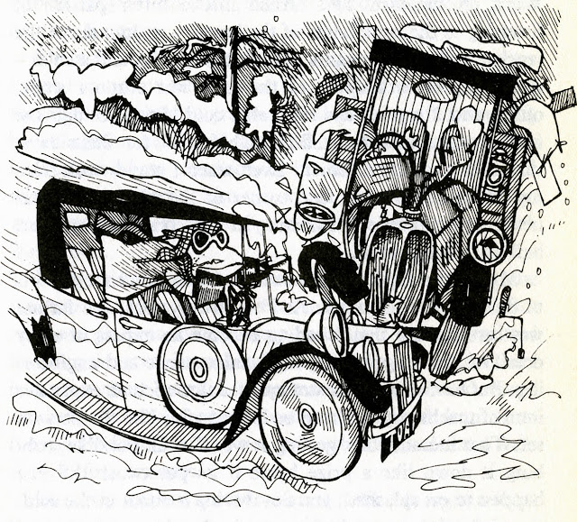

With impeccable timing, my ebook publisher Endeavour Press just told me that my sea novella, The Devil's Luck, is going up for free on Amazon at nine o'clock THIS MORNING!
Yeah, TODAY.
They suggested I asked as many people as possible to 'buy' it for nowt, to help it up the freebie ratings. I'm not sure how that helps me, but they say it does. Optimum time for free download algorithm is as close to nine as possible, so if you're feeling bored with toast and Weetabix, please click on the url below. Failing that, do it when you've finished crunching, or any time to suit yersen. And you don't even need a Kindle, I've just learned from this magnificently useful AE site - I've put the link below for people like me who tend not to read instructions. For once, it seems, I haven't missed the boat...
Missing the boat, however, is a trick I've made into something of an art form over the years. Most spectacularly was when I had a brilliant idea (sez me) for a novel based on The Wind in the Willows. I was lying in a truckle bed in a dosshouse in Dewsbury one Sunday morning, discussing the life and times of Toad and Co with a young lady, as you do. There's some dispute as to who had the idea actually, but we've had children together since, so that hardly matters.
I'd never written a novel before, so I started it next day and finished it in about a month. Didn't know how difficult it was meant to be, see. When I'd finished, me and her agreed that whoever's flash of brilliance it had been, the result was a towering classic, and would make my fortune (not hers, you notice!) Within another fortnight I'd typed it up, found out who published WiTW, and sent it off to them. Sat back and expected a cheque by return.
I'd missed the boat. Not by lateness, for once, but rather just the opposite. Methuen told me they liked the book a lot ('Dear Mrs Needle, etc etc') but that Grahame's version was in copyright, and if I went ahead it would cost me dear.
'But it's nothing like it!' I bleated. 'Toad, Ratty, Mole and Badger are the baddies! The stoats and the ferrets and the weasels are the starving rural poor! It's revolutionary!'
In which case, they responded, I'd go to prison, as well. Can't have that in a children's book. What would Paul Dacre say?
'But it's not a children's book! Neither is The Wind in the Willows, are you mad? Some children like and understand it, but it's for grown-ups! Any fule kno that!'
And so the correspondence ended. Until a few years later when my agent negotiated that I pay the copyright holders a share of my royalties, and Wild Wood went ahead.
Again, I weirdly missed the boat. Because it was published while Grahame's copyright was still in force, there wasn't an anniversary for the Press to notice. Sadly, anniversaries are the fount of most stories in the newspapers, as you know. Ten years, fifty years, a hundred years? It doesn't matter as long as there's a hook to hang a story on. So Wild Wood was virtually ignored, while the myriad sequels and follow-ups to WiTW that burst onto the scene when his copyright DID expire were covered wall to wall. I don't think it's sour grapes to say they probably didn't deserve it much.
Wild Wood didn't die the death, though, and ever since and from every where, people have popped out of the woodwork looking for copies, wondering if they can adapt it for stage, TV and film, saying how much they loved it. And the late, great Willie Rushton's marvellous illustrations as well.
And last week I found out from Julia Jones's Francis how I might get in touch with Rushton's estate, and found myself talking to his son Toby, who I met when I went to Willie's house to talk through the illustrations all those years ago. And Toby remembered the meeting! And had the book in view even as we spoke! And granted me permission to use the pictures!
All hail the internet! Last time I met Toby he was dressed in tennis whites, as was his father, and they were playing Wimbledon in their front room, on a ping pong table, with glasses of Robinson's Barley Water to hand. Honestly.
So, with the help of Julia, and my son Matti Gardner (whose mother's idea the book might have been - she lived in Burstall then, 17, Tart's Terrace if you must know), and good old Toby himself, the book will rise again. Certainly as an ebook, possibly as the real thing. Int life wonderful?
And in the meantime, download The Devil's Luck for FREE and keep the ebook revolution surging ever onwards.
You know it makes sense!
Oh, and another thing. Devil's Luck is a kind of a prequel to the first navy history novel I wrote, A Fine Boy for Killing, which the Guardian described thus:
After that will come more Bentley books, and more novellas about Charlie Raven, my new hero.
With good old Mister Toad bringing up the rear.
POOP-POOP!
Yeah, TODAY.
They suggested I asked as many people as possible to 'buy' it for nowt, to help it up the freebie ratings. I'm not sure how that helps me, but they say it does. Optimum time for free download algorithm is as close to nine as possible, so if you're feeling bored with toast and Weetabix, please click on the url below. Failing that, do it when you've finished crunching, or any time to suit yersen. And you don't even need a Kindle, I've just learned from this magnificently useful AE site - I've put the link below for people like me who tend not to read instructions. For once, it seems, I haven't missed the boat...
Missing the boat, however, is a trick I've made into something of an art form over the years. Most spectacularly was when I had a brilliant idea (sez me) for a novel based on The Wind in the Willows. I was lying in a truckle bed in a dosshouse in Dewsbury one Sunday morning, discussing the life and times of Toad and Co with a young lady, as you do. There's some dispute as to who had the idea actually, but we've had children together since, so that hardly matters.
{kind=link}
I'd never written a novel before, so I started it next day and finished it in about a month. Didn't know how difficult it was meant to be, see. When I'd finished, me and her agreed that whoever's flash of brilliance it had been, the result was a towering classic, and would make my fortune (not hers, you notice!) Within another fortnight I'd typed it up, found out who published WiTW, and sent it off to them. Sat back and expected a cheque by return.
I'd missed the boat. Not by lateness, for once, but rather just the opposite. Methuen told me they liked the book a lot ('Dear Mrs Needle, etc etc') but that Grahame's version was in copyright, and if I went ahead it would cost me dear.
'But it's nothing like it!' I bleated. 'Toad, Ratty, Mole and Badger are the baddies! The stoats and the ferrets and the weasels are the starving rural poor! It's revolutionary!'
In which case, they responded, I'd go to prison, as well. Can't have that in a children's book. What would Paul Dacre say?
'But it's not a children's book! Neither is The Wind in the Willows, are you mad? Some children like and understand it, but it's for grown-ups! Any fule kno that!'
And so the correspondence ended. Until a few years later when my agent negotiated that I pay the copyright holders a share of my royalties, and Wild Wood went ahead.
Again, I weirdly missed the boat. Because it was published while Grahame's copyright was still in force, there wasn't an anniversary for the Press to notice. Sadly, anniversaries are the fount of most stories in the newspapers, as you know. Ten years, fifty years, a hundred years? It doesn't matter as long as there's a hook to hang a story on. So Wild Wood was virtually ignored, while the myriad sequels and follow-ups to WiTW that burst onto the scene when his copyright DID expire were covered wall to wall. I don't think it's sour grapes to say they probably didn't deserve it much.
Wild Wood didn't die the death, though, and ever since and from every where, people have popped out of the woodwork looking for copies, wondering if they can adapt it for stage, TV and film, saying how much they loved it. And the late, great Willie Rushton's marvellous illustrations as well.
 |
| Mr Toad meets Baxter Ferret |
+_%27Toad%2520%25AD%2520Willie%2520Rushton%25201981.jpg){kind=link}
And last week I found out from Julia Jones's Francis how I might get in touch with Rushton's estate, and found myself talking to his son Toby, who I met when I went to Willie's house to talk through the illustrations all those years ago. And Toby remembered the meeting! And had the book in view even as we spoke! And granted me permission to use the pictures!
All hail the internet! Last time I met Toby he was dressed in tennis whites, as was his father, and they were playing Wimbledon in their front room, on a ping pong table, with glasses of Robinson's Barley Water to hand. Honestly.
So, with the help of Julia, and my son Matti Gardner (whose mother's idea the book might have been - she lived in Burstall then, 17, Tart's Terrace if you must know), and good old Toby himself, the book will rise again. Certainly as an ebook, possibly as the real thing. Int life wonderful?
And in the meantime, download The Devil's Luck for FREE and keep the ebook revolution surging ever onwards.
You know it makes sense!
Oh, and another thing. Devil's Luck is a kind of a prequel to the first navy history novel I wrote, A Fine Boy for Killing, which the Guardian described thus:
‘A painfully authentic portrayal of naval life in the 18th century. A powerful story of lost humanity…its violent emotions are shattering.’That was the first of a quartet of books about a man called William Bentley, which are still in print in America. Fine Boy will be going into ebook about a week after the above-mentioned freebie, done by me and Matti on my imprint Skinback Books.
After that will come more Bentley books, and more novellas about Charlie Raven, my new hero.
With good old Mister Toad bringing up the rear.
POOP-POOP!
The
Devil’s Luck
http://amzn.to/18tE1So
Free download app for laptops, etc
http://amzn.to/14RXu45
Free download app for laptops, etc
http://amzn.to/14RXu45
My website: janneedle.com